Teoría y Práctica Guiada
Red Eléctrica: 220V AC, 50 Hz
Transformadores: 220V/12V y 220V/12V-0-12V
Use las flechas ← → o los botones para navegar
El diodo es un dispositivo semiconductor que permite el flujo de corriente en una sola dirección. Está formado por la unión de un material tipo P y un material tipo N (unión PN).
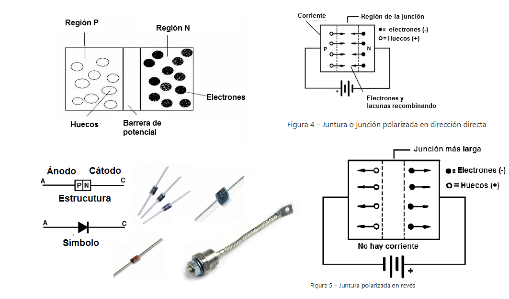
Objetivo: Verificar el comportamiento del diodo en polarización directa
Fuente DC (+) → Ánodo del diodo → Cátodo del diodo → Resistencia → Fuente DC (-)
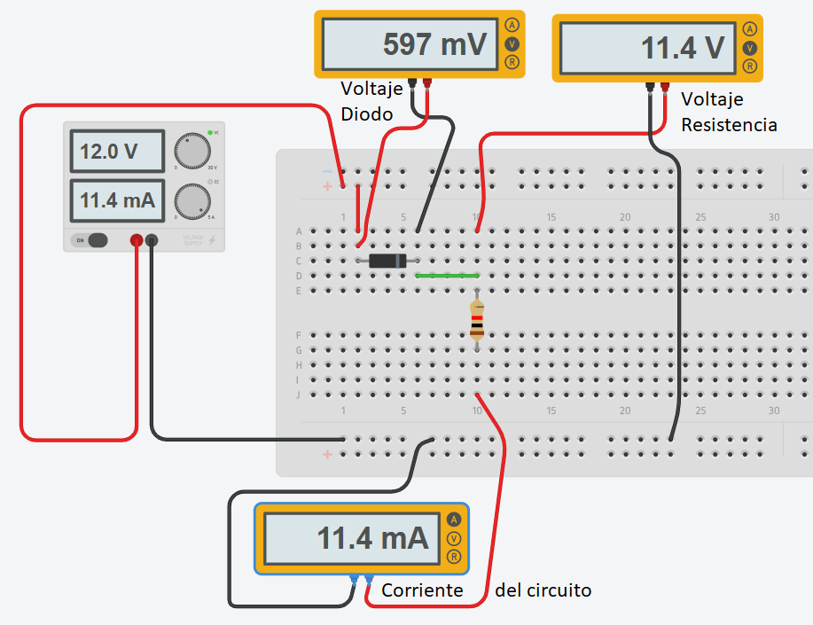
| Vfuente | VD medido | VR medido | I calculada |
|---|---|---|---|
| 3V | _____ V | _____ V | _____ mA |
| 5V | _____ V | _____ V | _____ mA |
| 9V | _____ V | _____ V | _____ mA |
| 12V | _____ V | _____ V | _____ mA |
Objetivo: Verificar el comportamiento del diodo en polarización inversa
Fuente DC (+) → Cátodo del diodo → Ánodo del diodo → Resistencia → Fuente DC (-)
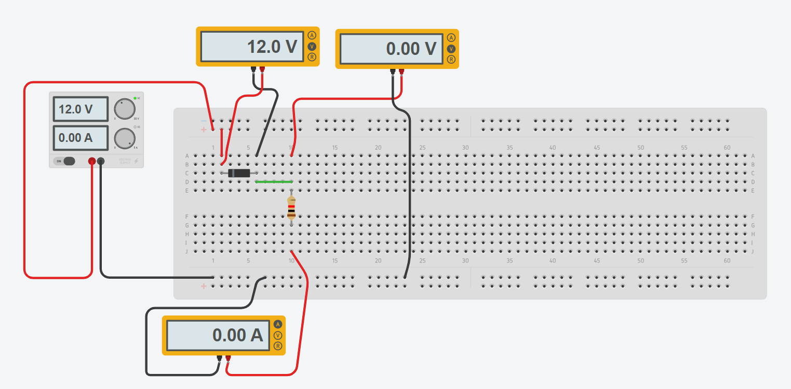
| Vfuente | VD medido | VR medido | I calculada |
|---|---|---|---|
| 3V | _____ V | _____ V | _____ μA |
| 6V | _____ V | _____ V | _____ μA |
| 9V | _____ V | _____ V | _____ μA |
| 12V | _____ V | _____ V | _____ μA |
Objetivo: Polarizar correctamente un LED y calcular su resistencia limitadora
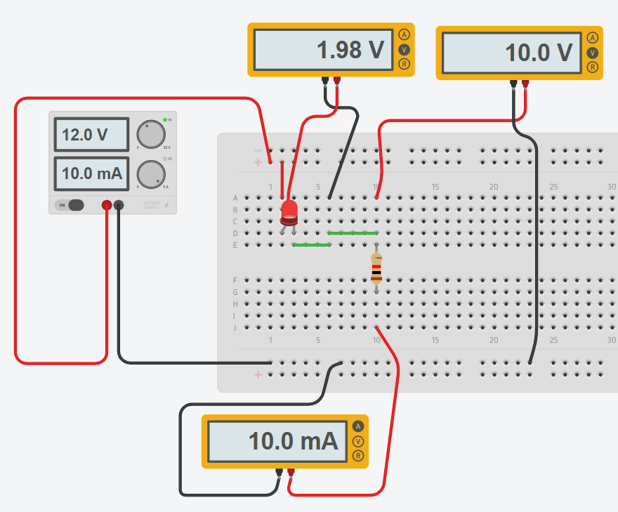
| Resistencia | VLED | VR | ILED | Intensidad |
|---|---|---|---|---|
| 220Ω | _____ V | _____ V | _____ mA | _____ |
| 470Ω | _____ V | _____ V | _____ mA | _____ |
| 1kΩ | _____ V | _____ V | _____ mA | _____ |
La rectificación de media onda es el proceso más básico de conversión de corriente alterna (AC) a corriente continua (DC). Utiliza un solo diodo que permite el paso de la corriente solo durante el semiciclo positivo de la señal de entrada.
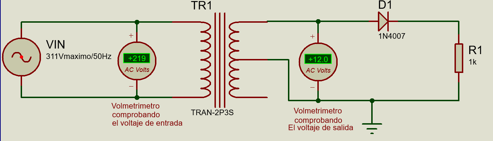
Objetivo: Construir y analizar un rectificador de media onda
La rectificación de onda completa convierte ambos semiciclos de la señal AC en DC pulsatoria. Existen dos configuraciones principales:
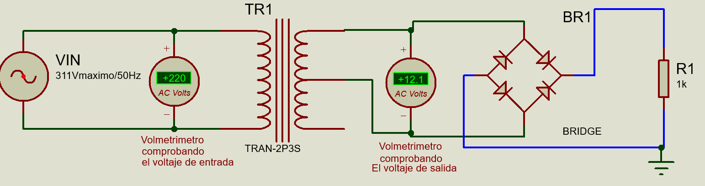
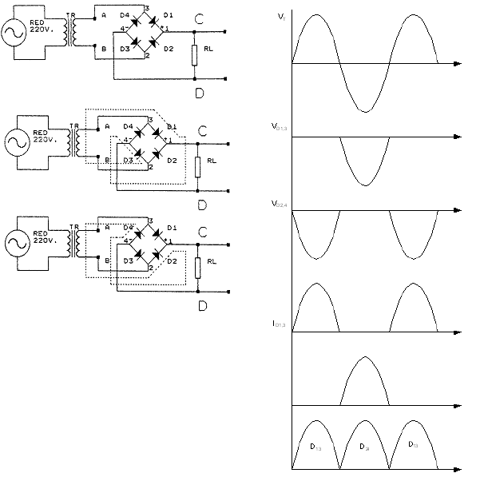
Objetivo: Implementar un rectificador de onda completa con puente de diodos
El capacitor se conecta en paralelo con la carga para suavizar la señal rectificada, almacenando energía durante los picos y liberándola durante los valles.
Donde:
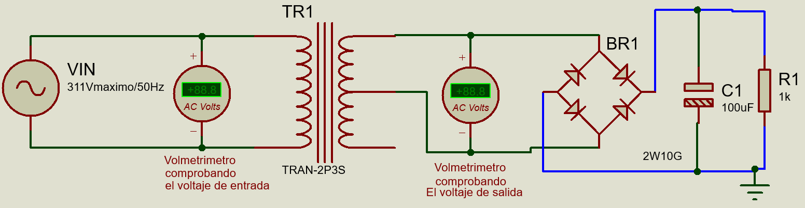
Objetivo: Analizar el efecto del capacitor en el rizado
| Capacitor | Vdc medido | Vr(pp) medido | % Rizado |
|---|---|---|---|
| 100μF | _____ V | _____ V | _____ % |
| 470μF | _____ V | _____ V | _____ % |
| 1000μF | _____ V | _____ V | _____ % |
Una fuente no regulada consiste en: transformador + rectificador + filtro. El voltaje de salida varía con los cambios en:
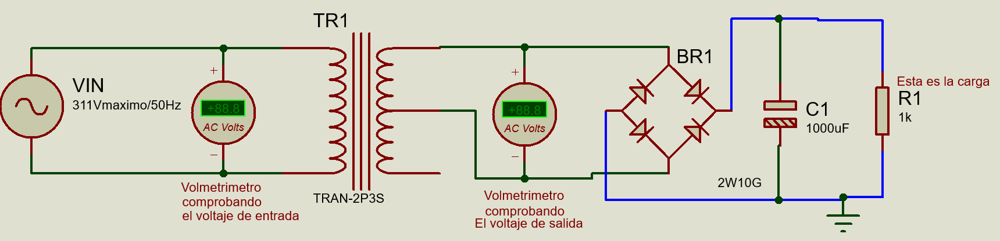
Objetivo: Caracterizar una fuente no regulada
| Resistencia | Corriente | Voltaje | Potencia |
|---|---|---|---|
| Sin carga | 0 mA | _____ V | 0 W |
| 1kΩ | _____ mA | _____ V | _____ W |
| 470Ω | _____ mA | _____ V | _____ W |
| 220Ω | _____ mA | _____ V | _____ W |
Los reguladores de la serie 78XX (positivos) y 79XX (negativos) son circuitos integrados que mantienen un voltaje de salida constante independientemente de las variaciones en:
| Serie | Polaridad | Voltajes disponibles | Corriente máx |
|---|---|---|---|
| 78XX | Positiva | 5, 6, 8, 9, 10, 12, 15, 18, 24V | 1A - 1.5A |
| 79XX | Negativa | 5, 6, 8, 9, 10, 12, 15, 18, 24V | 1A - 1.5A |
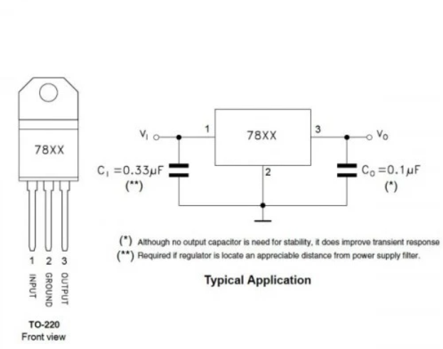
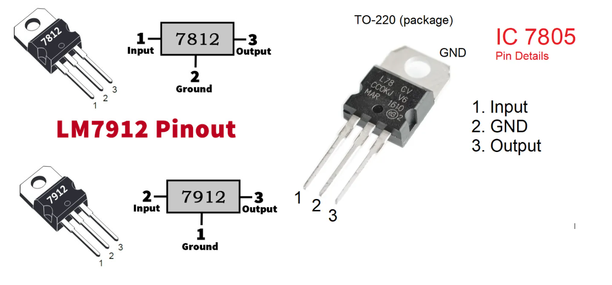
Objetivo: Probar reguladores 7805 y 7812
Fuente completa que incluye todas las etapas: transformación, rectificación, filtrado y regulación.
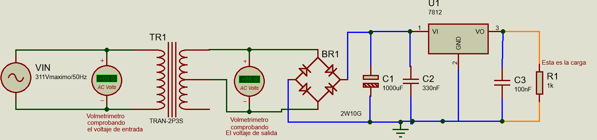
Objetivo: Construir una fuente de 12V @ 1A
| Punto de medición | Voltaje esperado | Voltaje medido |
|---|---|---|
| Secundario transformador | ~15V AC | _____ V |
| Después del puente (sin C) | ~20V DC pulsatoria | _____ V |
| Después del filtro | ~20-21V DC | _____ V |
| Salida 7812 | 12V DC | _____ V |
Fuente dual que proporciona dos voltajes regulados simultáneamente. Se puede implementar de dos formas:
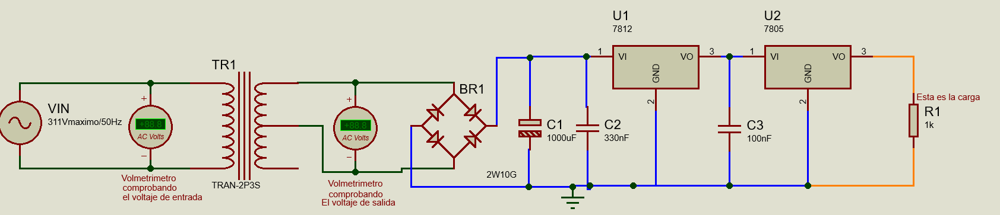
Objetivo: Implementar fuente dual 12V/5V
Cascada: Transformador → Puente → Filtro → 7812 → 7805
| Condición | Salida 12V | Salida 5V |
|---|---|---|
| Sin carga | _____ V | _____ V |
| I12 = 500mA, I5 = 0 | _____ V | _____ V |
| I12 = 0, I5 = 500mA | _____ V | _____ V |
| I12 = 500mA, I5 = 500mA | _____ V | _____ V |
Las fuentes simétricas proporcionan voltajes positivos y negativos respecto a tierra. Esenciales para:
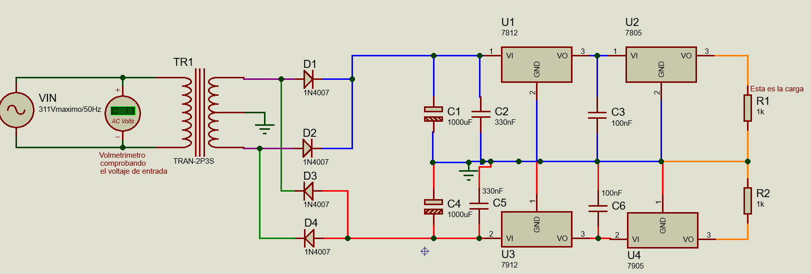
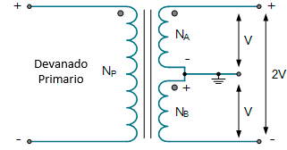
Objetivo: Construir fuente simétrica ±12V y ±5V
| Salida | Sin carga | Con carga 100Ω | Rizado |
|---|---|---|---|
| +12V | _____ V | _____ V | _____ mV |
| -12V | _____ V | _____ V | _____ mV |
| +5V | _____ V | _____ V | _____ mV |
| -5V | _____ V | _____ V | _____ mV |
Especificaciones:
| Número | Voltaje | Número | Voltaje |
|---|---|---|---|
| 7805/7905 | ±5V | 7815/7915 | ±15V |
| 7806/7906 | ±6V | 7818/7918 | ±18V |
| 7808/7908 | ±8V | 7824/7924 | ±24V |
| 7809/7909 | ±9V | 78L05 | +5V (100mA) |
| 7810/7910 | ±10V | 78L12 | +12V (100mA) |
| 7812/7912 | ±12V | LM317 | Ajustable 1.25-37V |